Sweet Baking
Mama
Carlow, Ireland
2025 - Ongoing..
Sweet Baking Mama
The cafe was designed as a "home away from home," built around a warm, family-like atmosphere where the owners are present daily, living the cafe and creating a genuine sense of care. A strong emphasis is placed on high-quality food, prepared with attention and consistency.
Our role as a marketing agency was to define these core values and then translate this feeling into social media, ensuring the cafe's warmth, authenticity, and human presence are felt both online and in person.
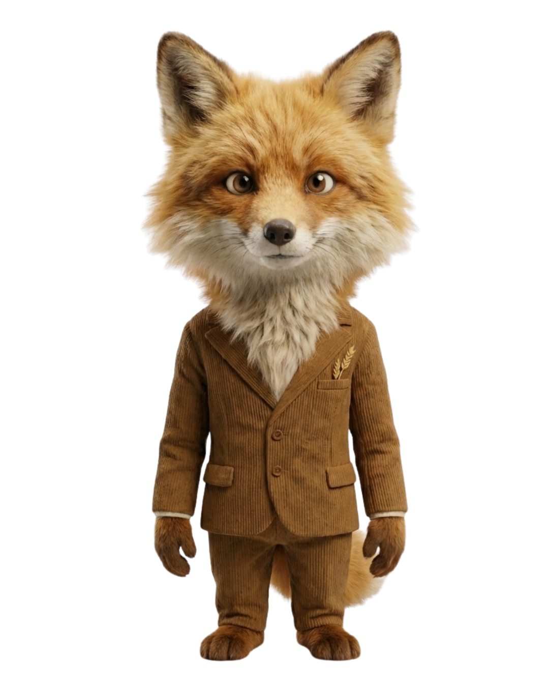
branding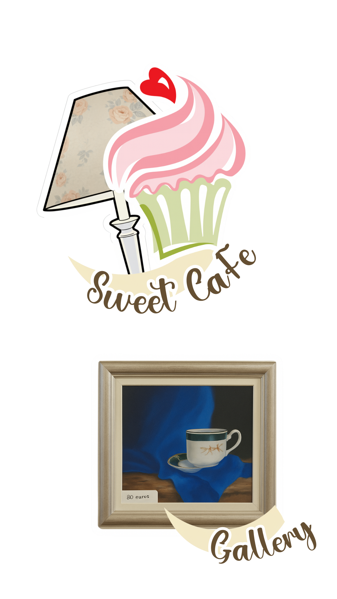
When we began, it became clear that a key foundation was missing: a brand book. As this is essential for building a consistent brand, we focused on creating it from scratch.
We started with a brand analysis and an in-depth interview with the owner to understand the café’s vision, long-term direction, and existing assets. Based on these insights, we defined a clear brand strategy aligned with the café’s identity and future goals.
We then developed a logotype optimised for digital use, particularly across social media. The brand book outlined guidelines for logo usage, colour palette, and typography, ensuring consistency across all touchpoints. Finally, we translated this framework into practical digital assets to support clear and cohesive communication on social platforms.
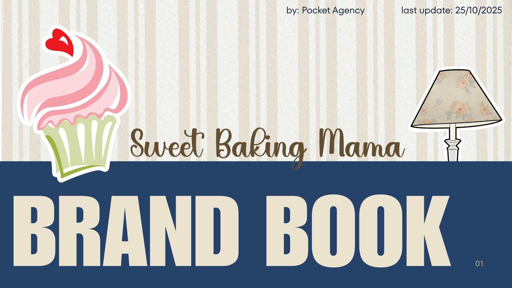
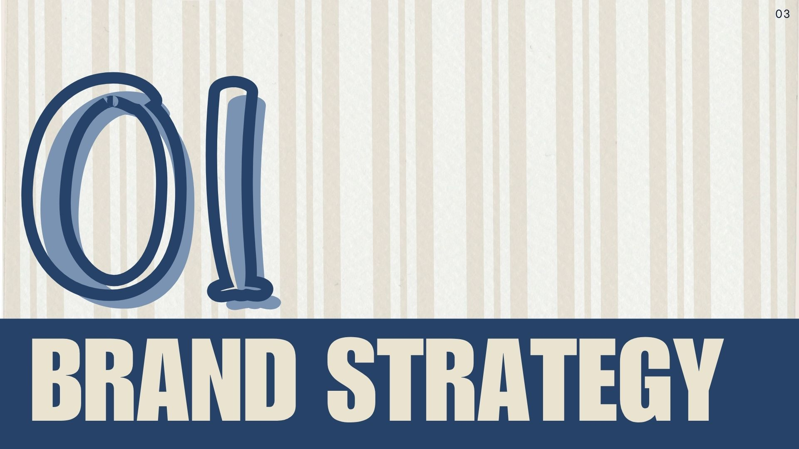
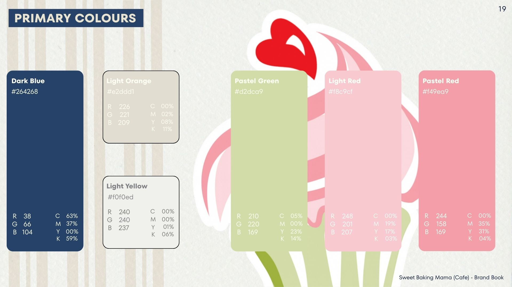
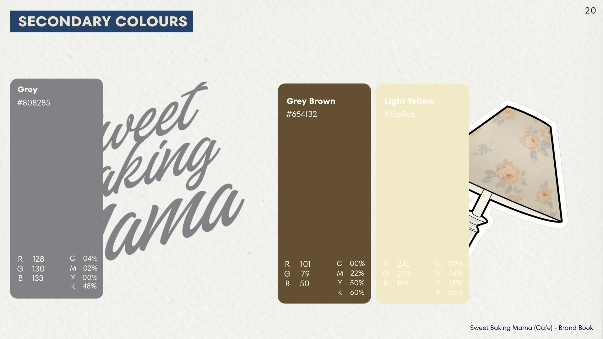
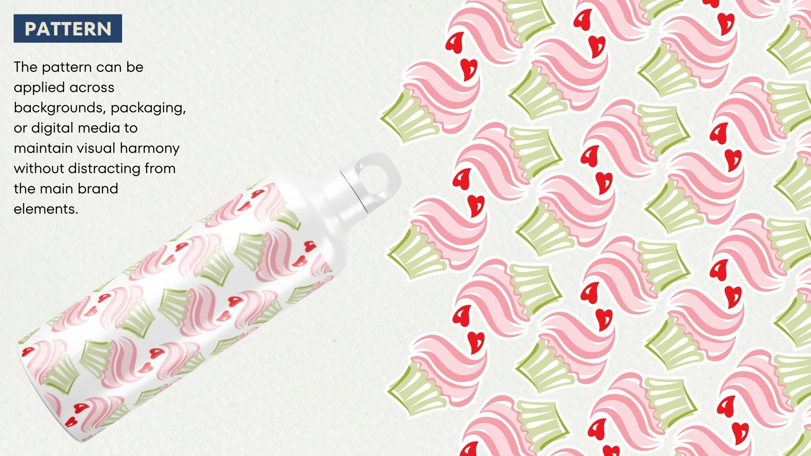
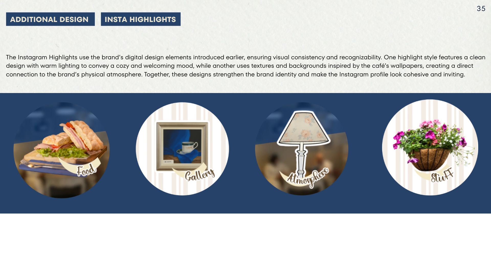
Over four months of collaboration, the café has grown by 700+ new followers on Instagram and 900+ on Facebook, and one of the videos we created has already reached 750,000+ views.
Based on our branding analysis, we rolled out two different strategies - each implemented over a two-month phase. Each phase had its own dedicated photoshoot and visual direction. Alongside that, we introduced an AI-powered reel concept featuring animal characters visiting the café and enjoying its signature dishes. These short cartoon-style stories were designed to spark warmth, nostalgia, and a little bit of magic - making the café feel not just like a real place, but a special one. The staff of the cafe and owner himself are also naturally woven into many of these reels, adding authenticity and strengthening the emotional connection with the audience.
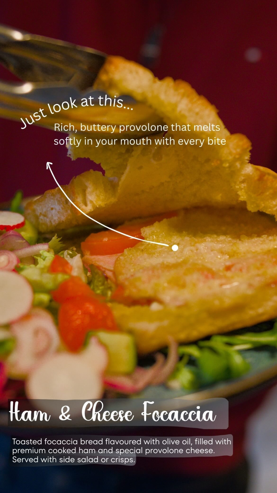
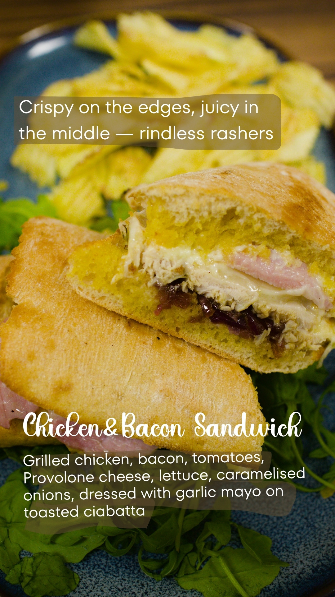
To be Continued..
The cafe was designed as a "home away from home," built around a warm, family-like atmosphere where the owners are present daily, living the cafe and creating a genuine sense of care. A strong emphasis is placed on high-quality food, prepared with attention and consistency.
Our role as a marketing agency was to define these core values and then translate this feeling into social media, ensuring the cafe's warmth, authenticity, and human presence are felt both online and in person.
When we began, it became clear that a key foundation was missing: a brand book. As this is essential for building a consistent brand, we focused on creating it from scratch.
We started with a brand analysis and an in-depth interview with the owner to understand the café’s vision, long-term direction, and existing assets. Based on these insights, we defined a clear brand strategy aligned with the café’s identity and future goals.
We then developed a logotype optimised for digital use, particularly across social media. The brand book outlined guidelines for logo usage, colour palette, and typography, ensuring consistency across all touchpoints. Finally, we translated this framework into practical digital assets to support clear and cohesive communication on social platforms.
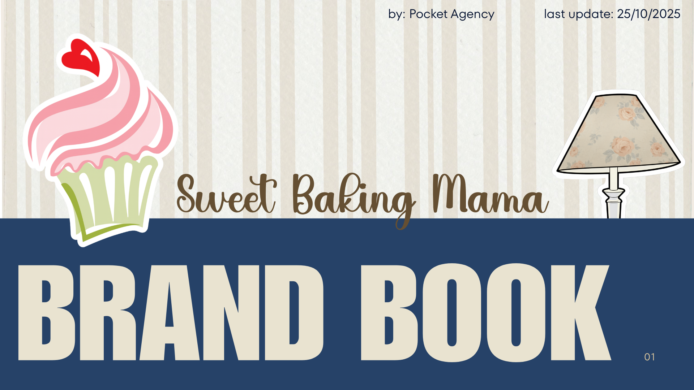
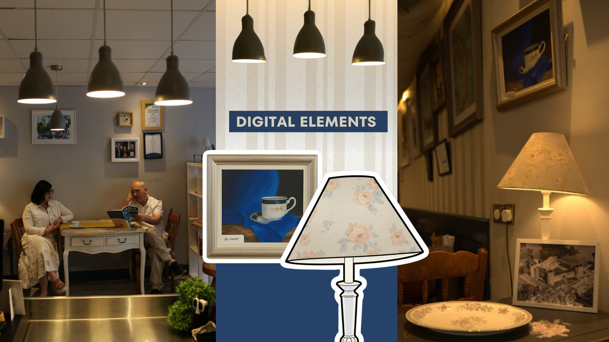
Over four months of collaboration, the café has grown by 700+ new followers on Instagram and 900+ on Facebook, and one of the videos we created has already reached 750,000+ views.
Based on our branding analysis, we rolled out two different strategies - each implemented over a two-month phase. Each phase had its own dedicated photoshoot and visual direction. Alongside that, we introduced an AI-powered reel concept featuring animal characters visiting the café and enjoying its signature dishes. These short cartoon-style stories were designed to spark warmth, nostalgia, and a little bit of magic - making the café feel not just like a real place, but a special one. The staff of the cafe and owner himself are also naturally woven into many of these reels, adding authenticity and strengthening the emotional connection with the audience.
To be Continued..